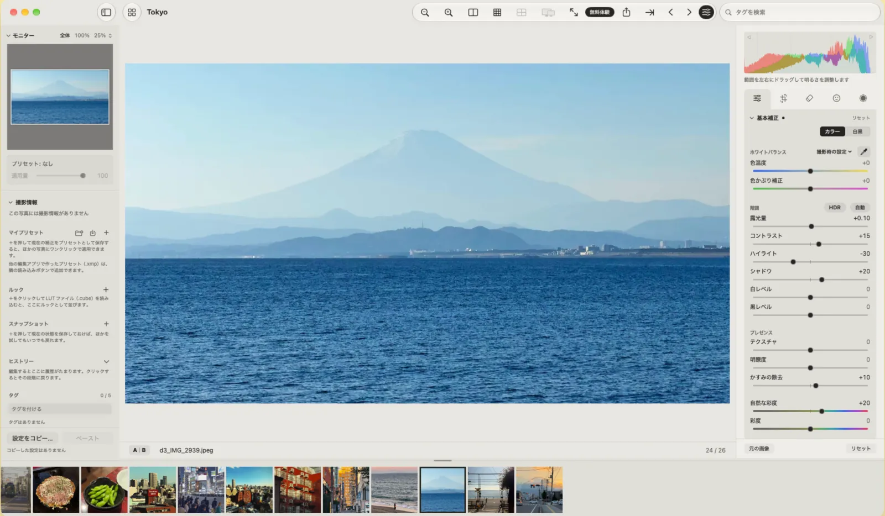

RAW
RAWは撮影したカメラに合わせた色と明るさで開きます。

132のカメラプロファイルを内蔵
富士フイルム、ソニー、キヤノン、ニコン、ハッセルブラッド、DJI、iPhone。カメラごとに色と明るさを合わせています。
アプリを更新せずに新しいカメラへ
設定で新しいプロファイルをすぐに、または毎週確認し、次に開く写真から適用します。
ハイライトを守る撮影モードにも対応
キヤノンの高輝度側・階調優先や富士フイルムのDR200/DR400で撮った写真も、カメラで見た明るさで開きます。
主要なRAW形式はすべて
CR3、CR2、NEF、ARW、RAF、RW2、ORF、DNG、3FR、IIQなど。MacではmacOSがまだ読めない新しいカメラは、埋め込みJPEGで編集してその旨をお知らせします。
JPEGやHEICも同じツールで
JPEG、HEIC/HIF、PNG、TIFF、WebP、AVIFも、RAWと同じスライダー・マスク・プリセットで編集できます。
フォルダで開く高速RAW現像
無料でダウンロードでき、30日間すべての機能を無料で試せます。macOS 26以降。 Windowsは10(64ビット)以降。